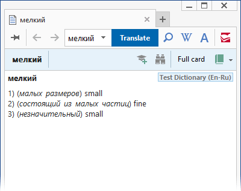
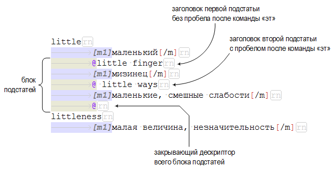

Пример (Ru-Ru)
Слово о полку Игореве
выдающийся памятник др.-рус. лит. конца XII в. В основе сюжета — неудачный половецкий поход Игоря Святославича (1185).
См. тж. Игорь Святославич

Назначение: Выделение помет. К пометам в DSL словарях причисляются не только указатели на характерные признаки слова или его употребления, но также условные сокращения и аббревиатуры.
Использование: В теле словарных статей и в заголовках. В заголовках необходимо дополнительно применять команду несортируемой части {···}, чтобы с её помощью скрывать дескрипторы или, по желанию, всю область тэга.
Отображение в карточках: По умолчанию отображается наклонным начертанием и зелёным (green) цветом. Цвет можно поменять в настройках программы: Tools → Options → Entry Window View (вызывается также по нажатию Ctrl+O). Щелчок на помете или наведение на неё курсора мыши вызывают всплывающую подсказку с разъясняющим текстом.
Особенности: Область тэга помет автоматически исключается из индексации.
Разъясняющий текст для отображения во всплывающей подсказке программа считывает в локальном файле аббревиатур, т.е. в том, который прилагается к файлу основного текста словаря. Если локальный файл отсутствует, то программа будет искать разъясняющий текст в глобальном файле аббревиатур, который находится в каталоге c:\Program Files\ABBYY Lingvo ??\, где ?? – номер версии Lingvo. Подробнее о локальных файлах абрревиатур см. в главе «Файл аббревиатур».
Пример использования тэга помет :: Запись в DSL
Слово о полку Игореве [m1]выдающийся памятник [p]др.-рус.[/p] [p]лит.[/p] конца XII [p]в.[/p] В основе сюжета — неудачный половецкий поход Игоря Святославича (1185).[/m] [m2][p]См. тж.[/p] [ref]Игорь Святославич[/ref][/m]
Пример использования тэга помет :: Вид в словарной карточке
Тэг помет не подчиняется действию тэгов форматирования цветом и начертанием, когда находится в зоне их действия. Т.е. запись вида [c red][b][p]разг.[/p][/b][/c] является бесполезной, т.к. несмотря на тэги красного цвета и полужирного начертания, сокращение «разг.» будет отображено зелёным курсивом (назначенным пометам по умолчанию).
История: Тэг введён в употребление в Lingvo версии 6.5. В ранних версиях (до 9.0 включительно) пометы по умолчанию не выделялись цветом и курсивом. В DSL словарях от ABBYY, созданных для этих версий, пометы маркируются тремя тэгами [c][i][p]···[/p][/i][/c]. Позднее, начиная с версии 10.0, этот обычай был возведён в правило.
Назначение: Выделение зоны транскрипции.
Использование: В теле словарных статей. Допускается также использование тэга в заголовках. В этом случае необходимо дополнительно применять команду несортируемой части {···}, чтобы с её помощью скрывать дескрипторы или, по желанию, всю область тэга.
Отображение в карточках: Отображается особым шрифтом с засечками «Newton Phonetic ABBYY», входящим в состав дистрибутива Lingvo. Шрифт произведён компанией ParaType, Inc.
Особенности: Размещение других тэгов в зоне действия данного тэга не разрешается. Например, запись [t][c]'erə[/c][/t] является неправильной и вызовет ошибку при компиляции.
Транскрипция :: Запись в DSL
decentralization [m1]\[[t]diːˌsentr(ə)laɪ'zeɪʃ(ə)n[/t]\][/m] [m1]децентрализация[/m]
Транскрипция :: Вид в словарной карточке
Тэг [t] подчиняется действию тэгов форматирования цветом и начертанием, когда находится в зоне их действия. Например, при записи вида [c firebrick][b][t]rait[/t][/b][/c] транскрипция будет отображена полужирным начертанием и кирпичным цветом.
История: Компилятор DSL впервые начинает признавать тэг транскрипции в Lingvo версии x3 (14.0).
Назначение: Выделение текcта в качестве зоны вторичного отображения. Вторичным называется отображение, которое показывается или скрывается по требованию пользователя.
Использование: В теле словарных статей. Допускается также использование тэга в заголовках. В этом случае необходимо дополнительно применять команду несортируемой части {···}, чтобы с её помощью скрывать дескрипторы или, по желанию, всю область тэга.
Отображение в карточках: Содержимое тэга может быть скрыто или показано при нажатии на специальную кнопку, а также по комбинации клавиш Ctrl+*. Начальное отображение содержимого при открытии карточки определяется соответствующей опцией в диалоге настроек Lingvo.
По факту содержимое тэга [*]···[/*] выделяется цветом, по умолчанию серым (gray). Цвета по умолчанию можно менять в диалоге настроек Lingvo, где возле каждого цвета стоит подпись – на что этот цвет влияет. Однако настройка, влияющая на изменение цвета зоны вторичного отображения, подписана совсем по-другому: «примеры».

До конца не ясно в чём именно здесь заключается ошибка разработчиков ABBYY: или цвет, предназначенный для примеров, ошибочно применяется к зоне вторичного отображения; или зона вторичного отображения ошибочно названа «примерами» в диалоге настроек. Рискнём предположить, что скорее всего это второе. Поскольку тэг [ex] принадлежит к группе поисковой обработки и все остальные тэги в этой группе цветом не выделяются. Кроме того, в старых версиях Lingvo (от 5.0 до 8.0) эта настройка носила наименование «Optional Text» / «Факультативная часть».
Употребление вторичного отображения :: Запись в DSL
мелкий [m1]1) ([i]малых размеров[/i]) small[/m] [m3][*]мелкие яблоки — small apples[/*][/m] [m3][*]мелкие черты лица — small features[/*][/m] [m1]2) ([i]состоящий из малых частиц[/i]) fine[/m] [m3][*]мелкий песок — fine sand[/*][/m] [m1]3) ([i]незначительный[/i]) small[/m] [m3][*]мелкие расходы — incidental / petty expenses, incidentals[/*][/m] [m3][*]мелкая кража — petty theft; [p]юр.[/p] petty larseny[/*][/m]
Анимация демонстрирует вид статьи выше в карточке при выключенном, а затем при включенном отображении вторичной зоны.

Особенности: В зоне действия данного тэга разрешается размещать другие тэги, но не все из них при этом срабатывают. Например, тэг цвета [c]···[/c] не срабатывает ни внутри тэга [*]···[/*], ни снаружи его. Т.е. записи вида [*][c]···[/c][/*] и [c][*]···[/*][/c] являются бесполезными, т.к. содержимое в этом случае будет отображаться серым цветом, а не зелёным, как того требует тэг [c].
С тэгом [*] хорошо взаимодействуют тэги форматирования [b], [i] и [u]. Они могут располагаться как внутри зоны действия тэга, так и снаружи, и в обоих случаях срабатывают.
Часть заголовка, заключенная в тэг вторичного отображения, также будет скрываться и показываться при нажатии на упомянутую кнопку или сочетание клавиш.
При компиляции словаря Lingvo автоматически добавляет пробел перед открывающим дескриптором [*]. Этот факт рекомендуется учитывать при составлении словарей, чтобы избежать появления нечаянных лишних пробелов.
Замечания: В системных словарях Lingvo зоной вторичного отображения принято маркировать конструкции вложенных подкарточек @.
В пользовательских словарях данный тэг часто используется в сочетании с тэгами [ex] и [i] для оформления примеров: [*][i][ex]···[/ex][/i][/*].
История: Тэг введён в употребление в Lingvo версии 6.0.
Назначение: Создание блока вложенных (под)статей (одной или нескольких). В официальном справочном руководстве к Lingvo употребляется термин «вложенная (под)карточка».
Использование: Только в теле словарных статей.
Общая информация: В тело словарной статьи может быть включена вложенная подстатья (одна или несколько). Обычно в ней даётся перевод или толкование наиболее употребительных выражений и словосочетаний, в которых используется заглавное слово. Подобно обыкновенной статье, вложенная подстатья имеет свой заголовок и тело. При выводе на экран карточки основной (корневой) статьи в ней отображается только заголовок вложенной подстатьи. Он выделяется цветом, назначенным в настройках программы для ссылок. По щелчку на таком заголовке в новом окошке (или вкладке) открывается карточка с содержимым вложенной подстатьи вместе с её заголовком.
Заголовок вложенной подстатьи отображается также в списке заглавных слов основного окна программы. На примере ниже в списке заголовков первый, выделенный заголовок «little» принадлежит корневой статье, а остальные принадлежат подстатьям.

При обращении к заголовку подстатьи через данный список (или переводе соответствующего словосочетания через буфер обмена) на экран выводится карточка с заголовком и телом подстатьи.
Синтаксис: Команда употребляется только в сочетании с предшествующим пробелом или табуляцией, и это сочетание может располагаться только в начале строки (на первой позиции строки). Другие варианты употребления символа @ «эт» (если только он не экранирован) приведут к ошибке компилятора «Неправильное использование символа начала подкарточки».
Будучи частью тела корневой статьи, все строки вложенных подстатей должны начинаться с символов табуляции или пробела (одного или нескольких).
Для создания заголовка вложенной подстатьи необходимо поставить символ «эт» @. К символу «эт», через пробел или без пробела, примыкает заголовочное слово(сочетание).
Тело вложенной подстатьи начинается со следующей, после «эт»-заголовка, строки и оформляется аналогично строкам обыкновенных статей. Заголовок и тело следующей подстатьи оформляются по той же схеме, в той же последовательности.
Для завершения всего блока подстатей необходимо поставить закрывающий дескриптор: символ «эт» @, стоящий обособленно на отдельной строке (разумеется с предшествующим пробелом или табуляцией).

Вложенные подстатьи :: Запись в DSL
little [m1]1) маленький[/m] [m3][*] @ little one малыш @ [/*][/m] [m1]2) немного, мало[/m] [m1]3) пустяк, мелочь[/m] [m3][*] @ little by little мало-помалу, постепенно @ [/*][/m]
Вложенные подстатьи :: Вид в словарной карточке
Особенности: К заголовкам вложенных подстатей применимы правила синтаксиса заголовков обыкновенных статей, кроме одного: обыкновенные заголовки располагаются в самом начале строки, а вложенные – после пробела или табуляции. Во вложенных заголовках действуют команды альтернативной (···) и несортируемой {···} части.
Если блок подстатей размещается в зоне действия тэгов установки отступа и/или вторичного отображения, то необходимо обращать внимание на следующее. Закрывающий дескриптор @ должен располагаться обособленно, на отдельной строке. Закрывающие дескрипторы других тэгов должны быть перемещены на следующую за ним строку. Т.е. запись вида @[/m] является неправильной и приведёт к ошибке во время компиляции. Дескриптор [/m] в данном случае нужно переместить на строку ниже.
Замечания: В системных словарях ABBYY Lingvo принято все вложенные подстатьи помещать в зону вторичного отображения.
Чтобы предотвратить специальную обработку символа «эт» @ и литерально отобразить его в словарной карточке, нужно его экранировать: \@.
История: Команда, по-видимому, употребляется в Lingvo начиная с самых первых версий. Первое упоминание о ней встречается в демонстрационном, пользовательском словарике к Lingvo версии 4.0.